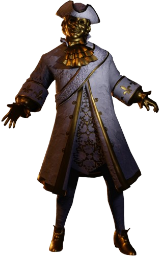

Gold Watchers

Informação Geral
Nome: Gold Watchers
Gênero: Não Possui
Idade: Desconhecido
Papel exercido: Perseguidor
Poder: Movimentação Absurdade veloz se não estiverem sendo vistos.
Fase: Deadly Decadence
Gênero: Não Possui
Idade: Desconhecido
Papel exercido: Perseguidor
Poder: Movimentação Absurdade veloz se não estiverem sendo vistos.
Fase: Deadly Decadence